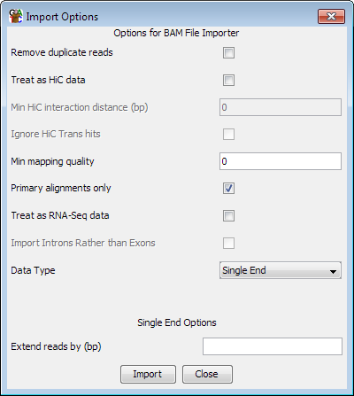

The SAM file format is a flexible text alignment format which is used by a variety of different alignment tools, and BAM is an equivalent binary format which is more compact. It supports single end and paired end reads, and unlike many other formats it is also able to describe reads which map across splice junctions. It is therefore often used by mRNA mapping programs.
Because the SAM/BAM format is well defined you don't need to specify much information to import your data.

In addition to the common options for both single and paired end data, there are a couple of extra option specific to SAM/BAM. The program will try to auto-detect the correct settings for importing a specific file, but you should check that the options selected match what you wanted to use.
For all read types you can choose to filter the incoming reads based on their mapping quality scores. The quality score ranges from 0 to 255 (with higher scores being better), and if you set a filter value then only mapped reads with a score above this value will be imported. Not all read mappers will include a score value so depending on where the file you are importing came from this option may have no effect. There is no fixed meaning to the scores, so for the specifics of the meanings in your files you'll need to look at the documentation for the aligner you used. The default value shown will be 20 unless no read in the first 100,000 of your file has a value >=20 in which case it will be the maximum observed value. You should check that this value makes sense with the scoring scheme used by the mapper you are using.
For files which report more than one alignment per read, one of the alignments should be flagged as the primary alignment. This may be quantitatively better than the other alignments or it could be a randomly selected example from a set of equally good alignments. If you want to be sure that you never import more than one alignment per read then you can select the "Primary alignments only" option (which is the default).
For spliced reads you can choose to treat the file as RNA-Seq data. This will have the effect of creating separate entries for each of the spliced elements of the read so that you can see just the exonic parts of the reads, and exclude the introns. You should select this option if you are importing RNA-Seq data with the intention of using it to quantitate expression.
If you choose to treat your file as RNA-Seq data you have an extra option which is to import the intron positions rather than the exons. Analysing the set of introns can be a simple and intuitive way of looking at splice variation in your data.